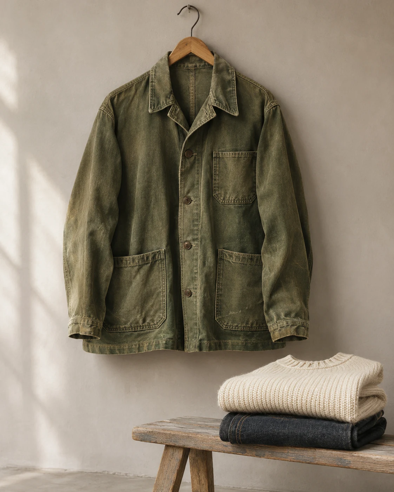

Investigate the change
Explore how manufacturing relocation and material substitutions affect clothing quality in selected brands.
A SOCIAL PROJECT
Fashion Check:
A Guide to a Conscious Wardrobe.
Exploring the quality of contemporary clothing—and how young people can build a wardrobe that lasts.

01 / THE PROBLEM
A familiar logo doesn’t tell the whole story.
The project examines a decline in contemporary clothing quality, including premium brands. Its presentation links cost-cutting, manufacturing relocation and the substitution of materials with garments that wear out sooner.
For students and young people in Tyumen, the question is practical: how can a limited budget go further without giving up personal style?
OUR DRIVING QUESTIONHow can the younger generation avoid overpaying for a brand name and find high-quality, stylish clothing as quality declines across mass-market and luxury sectors?
02 / GOAL & OBJECTIVES
Teach young people to identify poor-quality clothing and explore alternatives, including quality vintage pieces, to save money while staying stylish.
Explore how manufacturing relocation and material substitutions affect clothing quality in selected brands.
Highlight the project’s case for vintage: quality, affordability, unique history and a wider variety of choices.
The third objective was left unfinished in the original presentation. It remains open here.
03 / RESEARCH FINDINGS
The team examined academic articles, product reviews and consumer feedback. The presentation describes a University of Leeds study of 50 garments, including jeans and T-shirts.
abrasion cycles reported
abrasion cycles reported
The picture is mixed: the presentation also reports that the two most expensive T-shirts retained the best appearance after washing.
Levi’sThe Correspondent article discusses thinner fabrics and cites a consumer report of €100 jeans lasting only 2–3 years.
CarharttCustomer reviews cited thinner, less durable fabric, faster wear and increased polyester content.
MM6 Maison MargielaReported concerns include loose snaps and twisting seams.
Stone IslandReviews described fading colours, cheaper materials and less substantial hoodies.
Saint LaurentThe presentation reports concerns about craftsmanship and materials, using the Dior Homme era as a comparison.
The project’s interpretation: a logo can command a premium without guaranteeing quality, while vintage pieces may offer denser fabrics and better construction.
04 / WHO IT’S FOR
For students and young people who follow fashion and want their money to go further.
Based in Tyumen, the project helps its audience look beyond marketing and make informed choices about branded clothing.
05 / THE FINAL PRODUCT
The presentation describes a final product in three parts. This page introduces those parts; the presentation itself is the project report.
An in-depth analysis of manufacturing relocation and material cost-cutting, focusing on brands such as Carhartt, Saint Laurent and Stone Island.
A guide to the project’s argument for vintage: quality, lower prices, uniqueness and versatile styling.
A practical checklist described in the presentation: distinguish a quality garment from a cheap one by examining its seams and labels.
06 / ВАШ ОПЫТ
Привет! Мы проводим небольшой опрос в рамках социального проекта Fashion Check. Наша цель — узнать, как молодёжь выбирает одежду, что думает о качестве современных брендов и как относится к винтажной одежде.
Опрос анонимный. Заранее спасибо за участие!
Ваша анкета сохранена. Ваши ответы:
РЕЗУЛЬТАТЫ
27 анкет из Google Forms и новые ответы с сайта. Повторное сохранение той же анкеты не увеличивает счётчик.